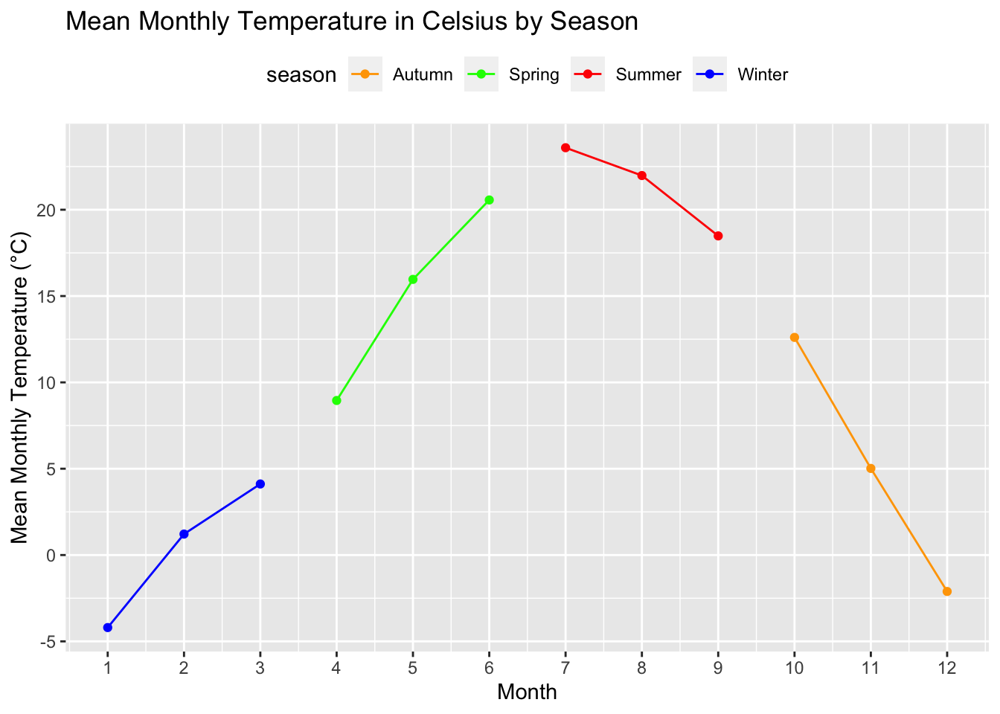
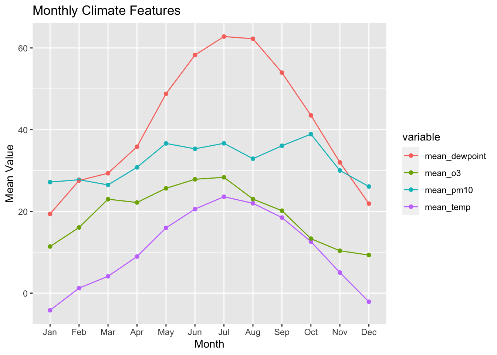

nnmaps <- read.csv("/Users/tyn/Documents/R/data set/chicago-nmmaps.csv")ProblemSet5
Problem 1 - Plotting
We first import the data set.
Produce a graph of the mean monthly temperature in celsius. Draw a scatter-plot where the x-axis is month and the y-axis is the average monthly temperature in celsius. Add a line connecting the points within each season and color the lines and points by season (same color for lines and points in the same season). Be sure both x-axis and the legend are ordered appropriately, and that all labels/titles are clear and ready for publication (e.g. no variable names).
library(ggplot2) library(tidyverse)── Attaching core tidyverse packages ──────────────────────── tidyverse 2.0.0 ── ✔ dplyr 1.1.3 ✔ readr 2.1.4 ✔ forcats 1.0.0 ✔ stringr 1.5.0 ✔ lubridate 1.9.2 ✔ tibble 3.2.1 ✔ purrr 1.0.2 ✔ tidyr 1.3.0 ── Conflicts ────────────────────────────────────────── tidyverse_conflicts() ── ✖ dplyr::filter() masks stats::filter() ✖ dplyr::lag() masks stats::lag() ℹ Use the conflicted package (<http://conflicted.r-lib.org/>) to force all conflicts to become errors# Convert Fahrenheit to Celsius nnmaps$temp <- (nnmaps$temp - 32) * 5/9 # Calculate mean monthly temperature in Celsius monthly_mean_temp <- nnmaps %>% group_by(season, month_numeric) %>% summarize(mean_temp = mean(temp))`summarise()` has grouped output by 'season'. You can override using the `.groups` argument.# Plot the scatter plot with lines ggplot(monthly_mean_temp, aes(x = month_numeric, y = mean_temp, color = season, group = season)) + geom_point() + geom_line() + labs( title = "Mean Monthly Temperature in Celsius by Season", x = "Month", y = "Mean Monthly Temperature (°C)" ) + theme(legend.position="top") + scale_color_manual(values = c('Winter' = 'blue', 'Spring' = 'green', 'Summer' = 'red', 'Autumn' = 'orange')) + scale_x_continuous(breaks = 1:12)
Produce a similar plot with four sets of lines: mean monthly temperature in celsius, mean montly O3, mean monthly PM10, and mean monthly dewpoint. Figure out a way to distinguish between the four lines. Again, make sure the plot is publication-ready (clean and clear labels).
# Calculate mean monthly values in Celsius monthly_mean_values <- nnmaps %>% group_by(month_numeric) %>% summarize( mean_temp = mean(temp, na.rm = TRUE), mean_o3 = mean(o3, na.rm = TRUE), mean_pm10 = mean(pm10, na.rm = TRUE), mean_dewpoint = mean(dewpoint, na.rm = TRUE) ) # reshape the data df_long <- tidyr::gather(monthly_mean_values, key = "variable", value = "value", -month_numeric) # create the scatter plot with lines connecting points ggplot(df_long, aes(x = factor(month_numeric), y = value, color = variable, group = variable)) + geom_point() + geom_line() + labs(title = "Monthly Climate Features", x = "Month", y = "Mean Value") + scale_x_discrete(labels = month.abb)
“Which of the four variables seems to have the least seasonal trend?”
From the plot, we can see that pm10 has the least seasonal trend.
Problem 2 - OOP Programming
Create a class to represent a polynomial expression (such as ) called poly. Do this using S4.
For the
polyclass, define the following:A constructor
A validator
A
showmethodAddition and substraction
# define the "poly" class setClass("poly", slots = list(degree = "numeric", coeff = "numeric")) # constructor poly <- function(degree, coeff) { return(new("poly", degree = degree, coeff = coeff)) } # Validator method setMethod( "initialize", "poly", function(.Object, degree, coeff) { # Validate inputs if (!is.numeric(degree) || !is.numeric(coeff) || length(coeff) != degree + 1) { return("Invalid input. Please provide a numeric degree and coefficients.") } .Object@degree <- degree .Object@coeff <- coeff return(.Object) } ) # show method setMethod("show","poly", function(object) { cat("Polynomial of degree", object@degree, "with coefficients:", object@coeff, "\n") } ) # addition method setMethod( "+", signature = c("poly", "poly"), function(e1, e2) { # Determine the maximum degree max_degree <- max(e1@degree, e2@degree) # Extend coefficients with zeros coefficients1 <- c(e1@coeff, rep(0, max_degree - e1@degree)) coefficients2 <- c(e2@coeff, rep(0, max_degree - e2@degree)) # Perform addition result <- poly(max_degree, coefficients1 + coefficients2) return(result) } ) # subtraction method setMethod( "-", signature = c("poly", "poly"), function(e1, e2) { # Determine the maximum degree max_degree <- max(e1@degree, e2@degree) # Extend coefficients with zeros coefficients1 <- c(e1@coeff, rep(0, max_degree - e1@degree)) coefficients2 <- c(e2@coeff, rep(0, max_degree - e2@degree)) # Perform subtraction result <- poly(max_degree, coefficients1 - coefficients2) return(result) } )Use your poly class to run the following code.
p1 <- poly(2, c(2, 0, 3)) p2 <- poly(3, c(17, -1, -2, 7)) p1Polynomial of degree 2 with coefficients: 2 0 3p2Polynomial of degree 3 with coefficients: 17 -1 -2 7p1 + p2Polynomial of degree 3 with coefficients: 19 -1 1 7p1 - p2Polynomial of degree 3 with coefficients: -15 1 5 -7I represent the polynomial with the degree and the coefficients. The coefficients are ordered from the lowest power term to the largest power term.
Problem 3 - data table
We first import the data set
library(nycflights13)
library(data.table)
Attaching package: 'data.table'The following objects are masked from 'package:lubridate':
hour, isoweek, mday, minute, month, quarter, second, wday, week,
yday, yearThe following objects are masked from 'package:dplyr':
between, first, lastThe following object is masked from 'package:purrr':
transposeGenerate a table reporting the mean and median departure delay per airport. Generate a second table reporting the mean and median arrival delay per airport. Exclude any destination with under 10 flights. Do this exclusion through code, not manually.
Additionally,
Order both tables in descending mean delay.
Both tables should use the airport names not the airport codes.
Both tables should print all rows.
flights <- data.table(nycflights13::flights) airports <- data.table(nycflights13::airports) # set the name of the departure airport setnames(airports, "faa", "origin") # the first table flights[airports, , on = "origin" ][ ,.(name, dep_delay) ][ , .(dep_delay_mean = mean(dep_delay, na.rm = TRUE), dep_delay_median = median(dep_delay, na.rm = TRUE)), by = name ][order(-dep_delay_mean, -dep_delay_median)]name dep_delay_mean dep_delay_median 1: Newark Liberty Intl 15.10795 -1 2: John F Kennedy Intl 12.11216 -1 3: La Guardia 10.34688 -3 4: Lansdowne Airport NaN NA 5: Moton Field Municipal Airport NaN NA --- 1436: Boston Back Bay Station NaN NA 1437: Black Rock NaN NA 1438: New Haven Rail Station NaN NA 1439: Wilmington Amtrak Station NaN NA 1440: Washington Union Station NaN NA# set the name of the arrival airport setnames(airports, "origin", "dest") # exclude destination with under 10 flights flights_1 <- ungroup(flights[ , .(.N, dest, arr_delay) , by = dest][N >= 10])[ , .(dest, arr_delay)] # the second table flights_1[ , .(arr_delay_mean = mean(arr_delay, na.rm = TRUE), arr_delay_median = median(arr_delay, na.rm = TRUE)), by = dest ][airports, , on = "dest" ][ , .(name, arr_delay_mean, arr_delay_median) ][order(-arr_delay_mean, -arr_delay_median)]name arr_delay_mean arr_delay_median 1: Columbia Metropolitan 41.76415 28 2: Tulsa Intl 33.65986 14 3: Will Rogers World 30.61905 16 4: Jackson Hole Airport 28.09524 15 5: Mc Ghee Tyson 24.06920 2 --- 1454: Black Rock NA NA 1455: New Haven Rail Station NA NA 1456: Wilmington Amtrak Station NA NA 1457: Washington Union Station NA NA 1458: Penn Station NA NA